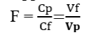

III.2. Préparation d’une solution par dilution
Principe de dilution :
La dilution consiste à augmenter le volume de solvant d’une solution afin de diminuer sa concentration. Pendant la dilution la quantité de matière n ne varie pas. Soit :
𝒏𝒑 : La quantité de matière dans la solution prélevée 𝑽𝒑 :le volume de la solution prélevée 𝐂p : la concentration de la solution prélevée | 𝒏f :La quantité de matière dans la solution diluée 𝑽f :le volume de la solution diluée 𝐂f :la concentration de la solution diluée appelée solution fille |
D’où 𝐧𝐩 = 𝐧𝐟 alors Cpx Vp= Cf x Vf
Remarque :
- Le volume de solvant à ajouter : Vsolvant = Vf – Vp
-Facteur de dilution.
On définit le facteur de la dilution noté F comme le rapport de la concentration de la solution prélevée sur celle de la solution fille ou le rapport du volume fille sur le volume prélevée.

Le facteur de dilution est un nombre sans unité, toujours supérieur à 1.
Réalisation pratique
A partir d’une solution de saccharose de concentration C=0,1 mol.L-1,on désire préparer une solution de concentration C=0,01 mol.L-1 et volume V= 100 m.L.
Mode opératoire
1 Introduire la solution mère dans un bécher.
Prélever cette solution à l'aide d'une pipette jaugée de 10 mL, préalablement rincée.
2 Verser les 10 mL de la solution mère dans une fiole jaugée de 100 mL.
Lors de l’ajustement du niveau, l'extrémité de la pipette doit toucher la paroi intérieure de la fiole

3Ajouter un peu d'eau distillée dans fiole jaugée.
Boucher la fiole et homogénéiser la solution

4 Oter le bouchon et ajouter encore de l'eau distillée jusqu'au trait de jauge supérieur.
Homogénéiser à nouveau la solution